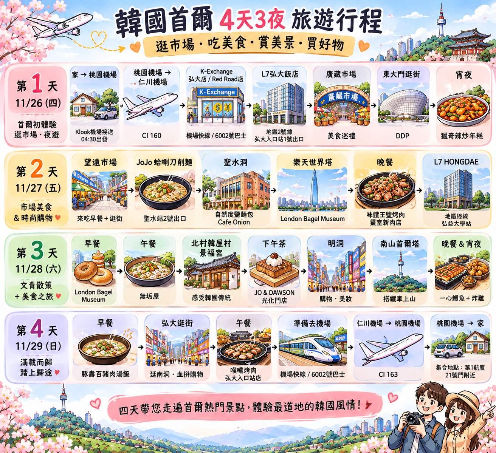

SEOUL TRAVEL JOURNAL ／ KOREA · NOVEMBER 20264 DAYS · 3 NIGHTS
TRAVEL PLAN · 2026.11.26 — 11.29
首爾四天三夜，慢慢玩、好好吃
市場小吃、咖啡街區、韓屋風景、購物與首爾夜景，一次收藏。

旅遊日期
11/26 – 11/29 2026
旅遊天數
4 天 3 夜
住宿飯店
L7 弘大
去回航班
CI 160 / CI 163
每日詳細行程
點選日期切換當天行程；地點按鈕可用韓文開啟 Naver Map 搜尋。
📌 行前提醒與待辦事項
出發前完成
- ☐ 台灣護照旅客：2026/12/31 前暫免 K-ETA；仍須提交入境申報，可選電子或紙本；電子卡可在抵達前 3 天內免費申報。
- ☐ 確認護照、航班資料、飯店韓文地址；把 eSIM QR code 和重要資料先存手機，並留一份截圖。
- ☐ 出發前一天查看首爾天氣；準備保暖外套、好走的鞋，按天氣帶雨具。
放進隨身行李
- ☐ 常用藥與處方資料、手機／充電器、韓國兩圓孔轉接頭（韓國 220V）。
- ☐ 行動電源放隨身行李，不要托運；依航司規定攜帶，避免在機上使用或充電。
- ☐ 手提液體每瓶不超過 100 mL，放入 1 L 透明夾鏈袋。
- ☐ Naver Map、Papago；先存飯店地址與集合地點，備好交通卡及少量韓元現金。
韓國求助電話：警察 112、消防／救護 119、旅遊諮詢 1330。
入境規定與航空行李限制可能調整，請以出發前官方公告及承運航空公司規定為準。